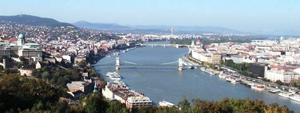

Welcome!
This is the homepage of Balázs Agócs's Missionary Tours in Budapest
- Purpose of the site: The purpose of the site is to provide information for the missionaries whom I will be guiding in Budapest about the routes we are gonna take.
- A short story of the "Missionary Tours": One year I had my birthday on a Monday, which is a P day for missionaries. I took the day off and asked them if I could act like a tourist guide, and show them Budapest, the capital of Hungary.
The tour was successful, and they liked it very much, but it took too long. For the next occassion I planned the first route, for the Pest side, and because some missionaries stay long enough, I devised a second one to the Buda side.